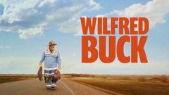

Lisa Jackson
Anishinaabe; Aamjiwnaang First Nation · Canada
Land references on the atlas: Anishinaabewaki, Anishinabewaki ᐊᓂᔑᓈᐯᐗᑭ
Films 15

Pushing the Line: Art Without Reservations 2009
Director · Documentary · Feature

Indictment: The Crimes of Shelly Chartier 2017
Co-director · Documentary

Sources
- doornumber3.ca ↗ · Filmmaker production company biography — “Lisa Jackson's company identifies her as Anishinaabe from Aamjiwnaang First Nation.”
- imaginenative.org ↗ · imagineNATIVE 2025/2026 official festival program
Cite this page
MLA
“Lisa Jackson.” Indigenous Cinema Atlas: Abya Yala and Turtle Island, created by John Kennedy Godoy, University of Colorado Boulder, 2026, https://jwilliamkennedy.github.io/abya-yala-film-atlas/beta/maker/DIR-0118.html. Accessed .
Chicago
Godoy, John Kennedy. “Lisa Jackson.” Indigenous Cinema Atlas: Abya Yala and Turtle Island. University of Colorado Boulder, 2026. https://jwilliamkennedy.github.io/abya-yala-film-atlas/beta/maker/DIR-0118.html.
Identity is recorded only from the filmmaker’s own words or an explicit biographical source; it is never inferred from a film’s subject, language or setting. Images remain with their rights holders.